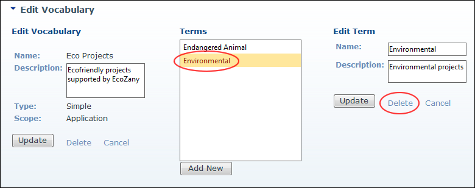

Deleting Terms
How to delete one or more term associated with either a simple or hierarchical vocabulary using the Taxonomy Manager module.
- Navigate to Admin > Advanced Settings >
 Taxonomy - OR - Go to a Taxonomy Manager module.
Taxonomy - OR - Go to a Taxonomy Manager module.
- Click the Edit
 button beside the vocabulary that the term to be deleted is associated with. This opens the Edit Vocabulary page.
button beside the vocabulary that the term to be deleted is associated with. This opens the Edit Vocabulary page.
- In the Terms list, select the term to be edited. This displays the Edit Term section.

- Click the Delete button located below the Edit Term section.
- Repeat Steps 3-4 to delete additional terms.